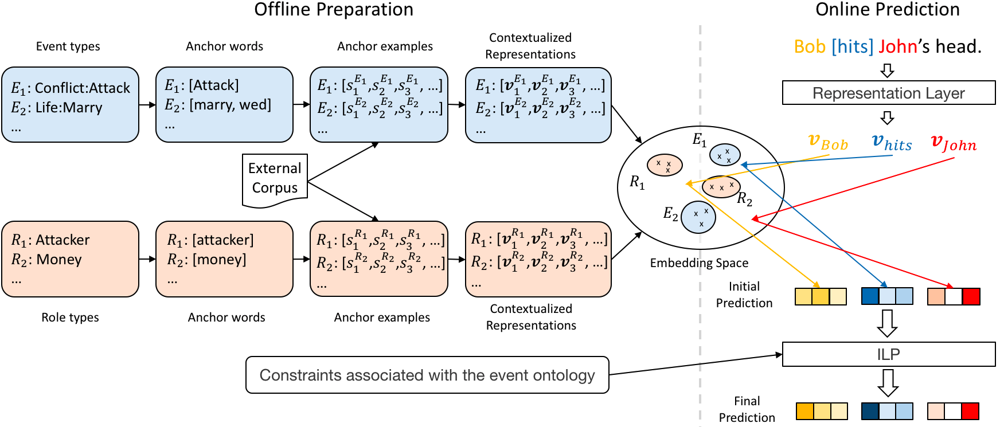

My Résumé Google Scholar
Greetings! I am a graduate student at Department of Computer and Information Science, University of Pennsylvania. Currently, I am working on schemas and events in Cognitive Computation Group, following Prof. Dan Roth.
I was an undergrad at Shanghai Jiao Tong University (上海交通大学), majoring in Information Engineering from 2015 to 2019. My undergraduate thesis was on traffic optimization in datacenter networks with deep reinforcement learning, under the supervision of Prof. Lingge Jiang. I was a visiting student of the Natural Language Processing group at UCSB in the summer of 2018, advised by Prof. William Yang Wang and Dr. Vivek Kulkarni. I did most of my undergrad research at the Machine Vision and Intelligence Group at SJTU, advised by Prof. Cewu Lu. I was also a research assistant at the National Engineering Laboratory for Information Content Analysis Technology at SJTU, advised by Prof. Shenghong Li.
I am interested in applying machine learning algorithms to problems in Natural Language Processing, Computer Vision, and Networks. My ultimate academic goal is to design algorithms that are as cognitively capable as human beings in every meaningful dimensions.
Publications
Peer-reviewed
[1] Muhao Chen, Hongming Zhang, Haoyu Wang, and Dan Roth. "What Are You Trying to Do? Semantic Typing of Event Processes", The SIGNLL Conference on Computational Natural Language Learning (CoNLL), 2020.
[2] Haoyu Wang, Muhao Chen, Hongming Zhang, and Dan Roth. "Joint Constrained Learning for Event-Event Relation Extraction", Conference on Empirical Methods in Natural Language Processing (EMNLP), 2020.
[3] Hongming Zhang, Muhao Chen, Haoyu Wang, Yangqiu Song, and Dan Roth. "Analogous Process Structure Induction for Sub-event Sequence Prediction", Conference on Empirical Methods in Natural Language Processing (EMNLP), 2020.
[4] Haoyu Wang, Vivek Kulkarni, and William Yang Wang. "DOLORES: Deep Contextualized Knowledge Graph Embeddings", Automated Knowledge Base Construction (AKBC), 2020.
[5] Yuliang Xiu *, Jiefeng Li *, Haoyu Wang, Yinghong Fang, and Cewu Lu. "Pose Flow: Efficient Online Pose Tracking", British Machine Vision Conference, 2018.
Others
[6] Hongming Zhang, Haoyu Wang, and Dan Roth. "Unsupervised Label-Aware Event Trigger and Argument Classification", The Thirty-Fifth AAAI Conference on Artificial Intelligence (AAAI-21), under review.
[7] Haoyu Wang and Lingge Jiang. "A Study on Load Balancing Algorithm with Lightweight AI", undergraduate thesis, 2019.
[8] Zelin Zhao, Haoyu Wang *, Gao Peng *, Haoshu Fang, Chengkun Li, and Cewu Lu. "Estimating 6D Pose From Localizing Designated Surface Keypoints", arXiv preprint, 2018.
Research Projects
-
A joint constrained learning framework for event temporal, subevent, and coreferential relation extraction.
-
Unsupervised event extraction

-
Event process typing and Subevent sequence prediction
-
Knowledge Graph Embedding: A knowledge graph embedding algorithm that captures contextual cues and dependencies among entities and relations.

-
Human Pose Tracking: A new method for multi-person pose tracking with spatio-temporal information.

-
6D Object Pose Estimation: A novel architecture of detecting 3D model instances and estimating 6D pose under occlusion.

-
Traffic Optimization with Deep Reinforcement Learning: A hierarchical architecture for load balancing and flow scheduling in datacenter networks.

Short-term Programs
-
EE Summer Intensive Program, University of Washington, Seattle, USA, 2016.6
-
Winter International Student Experience, Sungkyunkwan University (성균관대학교), Seoul, South Korea, 2019.1
Recreations
-
Piano: started to play at the age of 4
-
Tennis: served as President of SJTU Tennis Association from 2016.6 to 2017.6